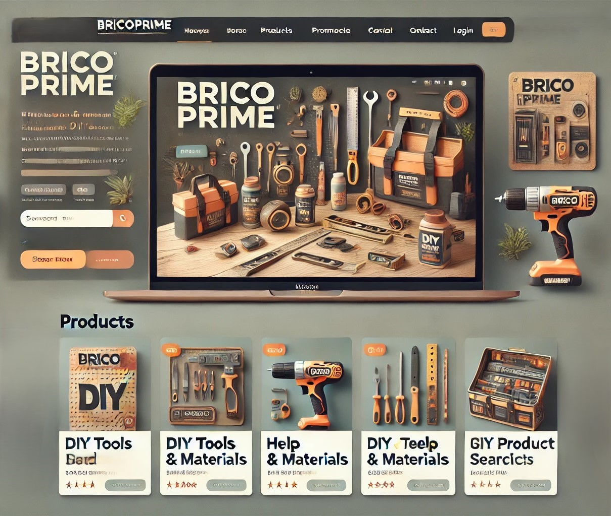
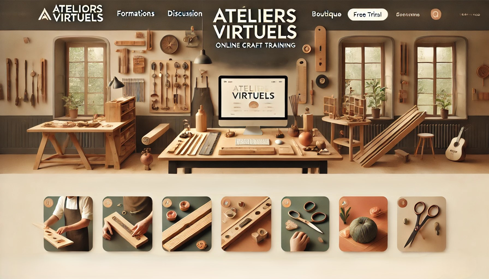
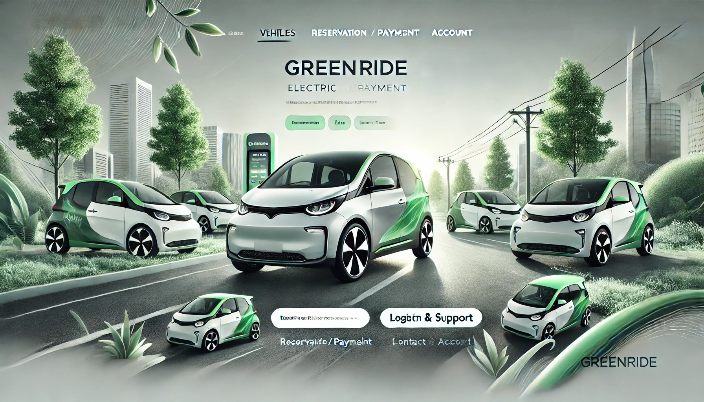
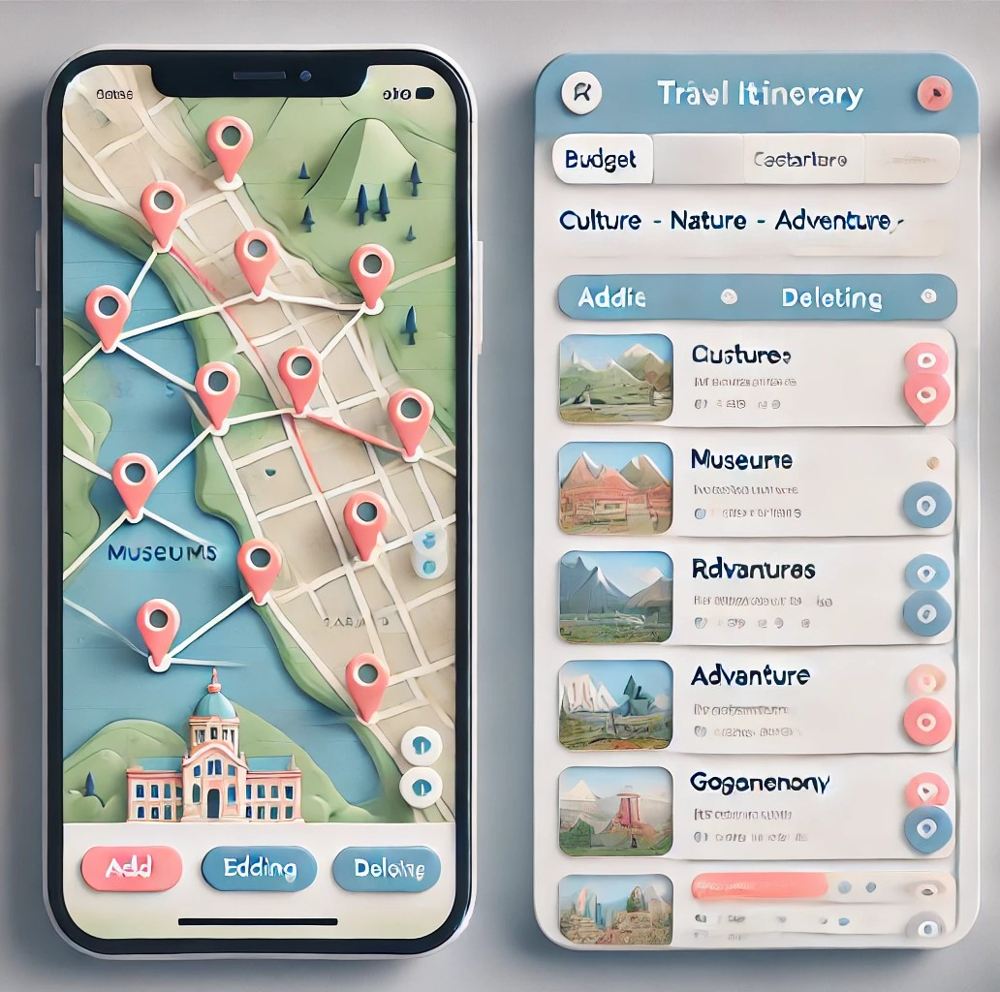
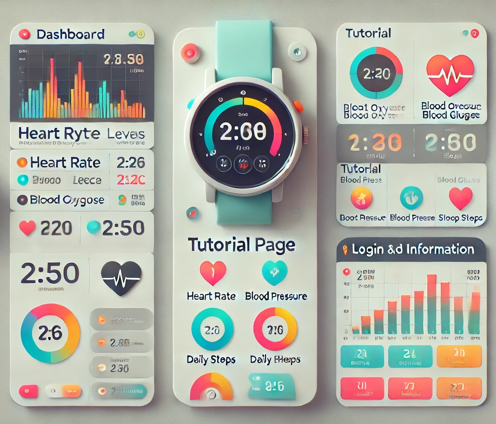
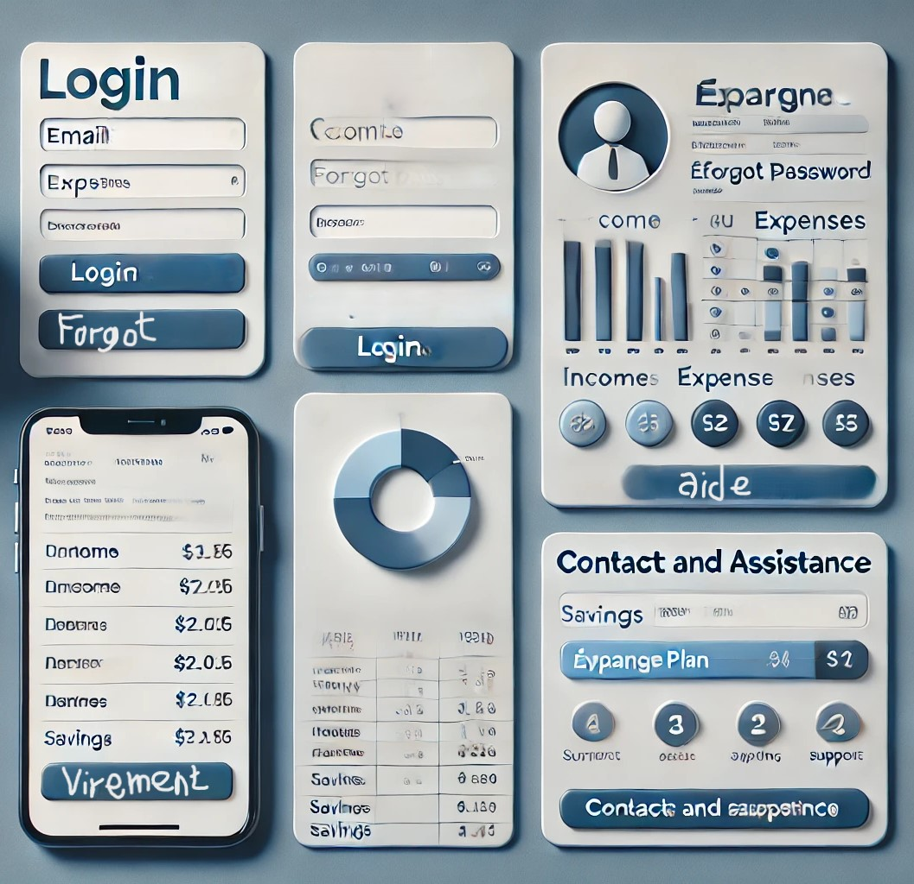

BricoConnect
Objectif :
Création d’un site internet pour l’entreprise.
La page d'accueil doit contenir dans l’en-tête le nom de l’entreprise, des boutons renvoyant sur : la page des produits, la page d’aide et contact et la page de connexion. Elle doit aussi contenir une barre de recherche qui permet de chercher des produits grâce à des mots clés. l’en-tête ne change pas pour les autres pages.
Dans le body de la page il doit y avoir les produits en promotion.
La page des produits doit contenir des possibilité de filtrer les produits en fonction de leur couleur, leur prix, leur popularité et leur type. Elle doit aussi contenir un moyen de changer le trie des produits comme trier de A à Z, de Z à A, en prix croissant, en prix décroissant.
Chaque produit doit avoir une page avec une ou plusieurs photos et une description du projet. dans cette page il doit avoir la possibilité de l'ajouter au favorie ou de mettre l’objet dans le panier pour acheter.
La page d’aide et contact doit permettre à l'utilisateur d’appeler l’entreprise en cas de problème ou envoyer un mail directement via la page et en ajoutant son adresse mail si il n’est pas connecté.
La page de connexion doit permettre à l’utilisateur de se connecter à son compte. Le compte doit permettre d’enregistrer les produits ajoutés et les produits déjà achetés ainsi que le panier du compte.
photos :

entreprise :
BricoPrime : entreprise de vente de matériel de bricolage
VirtuoLearn
Objectif :
Création d’un site internet pour l’entreprise.
La page d'accueil doit contenir dans l’en-tête le nom de l’entreprise, des boutons renvoyant sur : la page des formations, la page de discussion, la page boutique et la page de connexion/compte. Elle doit aussi contenir une barre de recherche qui permet de chercher des formations, des métiers, des produits ou autre grâce à des mots clés. l’en-tête ne change pas pour les autres pages.
Dans le body de la page il doit y avoir des vidéos présentant le site mais aussi les différents abonnements qui renvoient à la page boutique ainsi qu’un essai gratuit proposé.
La page des formations doit regrouper toutes les formations différentes et un trie est possible avec la sélection d’une matière (ex : menuiserie, couture, cuisine…) mais aussi par niveau (ex : débutant, intermédiaire, expert) en sachant que seul les vidéos débutant sont gratuites donc si il n’y a pas d’abonnement les autres vidéo doivent être bloqué.
La page de discussion doit permettre de pouvoir discuter avec d’autre personne qui utilise le site mais aussi de contacter l’entreprise en cas de problème.
La page boutique doit permettre d’acheter des outils ou kits nécessaires pour les formations mais aussi d’acheter un abonnement. Il peut y avoir aussi des offres groupées (ex : abonnement + kit matériel) ou des promotions qui doivent être mises en avant.
La page de compte doit permettre de se connecter quant on à un abonnement sinon peut renvoyer vers la boutique pour en acheter un, elle doit aussi permettre de changer son abonnement ou de le résilier.
photos :

entreprise :
Ateliers Virtuels : entreprise de formation en ligne
EcoMove Hub
Objectif :
Création d’un site internet pour l’entreprise.
La page d'accueil doit contenir dans l’en-tête le nom de l’entreprise, des boutons renvoyant sur : la page des véhicules, la page de réservation/paiement, la page de contact et assistance et la page de connexion/compte. Elle doit aussi contenir une barre de recherche qui permet de chercher les différents véhicules et les différents prix ou autre grâce à des mots clés. l’en-tête ne change pas pour les autres pages.
Dans le body de la page il doit y avoir des vidéos présentant le site, les informations des différents véhicules ainsi que les différents prix.
La page des véhicules permet de chercher le manuel du véhicule qui est aussi sous forme d’une vidéo.
La page de réservation/paiement doit afficher une carte interactive qui permet de montrer les véhicules qui sont à proximité de l’utilisateur grâce à sa localisation. Une fois le véhicule choisi, une page de paiement apparaît et permet à l'utilisateur de payer la réservation, si l’utilisateur utilise bien le véhicule un prélèvement se fera au temps d’utilisation du véhicule le chronomètre commence dès les 15 minutes de réservation fini.
La page de contact et assistance doit permettre à l'utilisateur d’appeler l’entreprise en cas de problème ou envoyer un mail directement via la page et en ajoutant son adresse mail s' il n’est pas connecté.
La page de connexion/compte doit permettre à l’utilisateur de se connecter à son compte. Le compte doit permettre d’enregistrer les informations personnelles de l’utilisateur. Cette page lui permet aussi de visionner des informations et de les modifier.
photos :

entreprise :
GreenRide : entreprise de location de véhicule électrique
GlobePlanner
Objectif :
Création d’une application d’aide pour les clients de l’entreprise.
Cette application doit prendre en compte le lieu et le temps du séjour ainsi que le budget pour ce voyage, puis proposer des catégories : culture, nature, aventure, gastronomie, etc. pour créer un itinéraire.
L’application doit contenir une carte ou apparaît l’itinéraire, les lieux de l’itinéraire apparaissent aussi en liste avec l’adresse et des informations.
Il y a la possibilité de supprimer des lieux de l’itinéraire ainsi que d’enregistrer des lieux. Il y a aussi la possibilité de rajouter des lieux comme par exemple : des restaurants, des musées, des attractions locales, etc.
photos :

entreprise :
MondialTravel : entreprise de gestion de voyage
OpalTrack
Objectif :
Création d’une application liée à une montre pour l’entreprise.
Toutes les pages doivent contenir des boutons renvoyant sur : la page principale, la page de tuto et la page de connexion/information.
La page principale doit conserver et afficher les informations que la montre relaie : la fréquence cardiaque, l’oxygène dans le sang, la pression artérielle, la glycémie et le nombre de pas parcourus dans la journée. Elle doit aussi montrer le nombre d’heure de sommeil
La page de tuto doit contenir des vidéo tier par thème.
La page de connexion ou d’information doit permettre à l’utilisateur de se connecter à son compte. Le compte doit permettre d’avoir toute l’activité faite sur l’application ainsi que les informations que l’utilisateur à donné.
photos :

entreprise :
Opalys : entreprise de montre et bijoux
FinancePlan Assist
Objectif :
Création d’une application d’aide pour les clients de l’entreprise.
La première page et une page de connexion c’est la page principale et elle permet d’accéder aux autre page
Toutes les autres pages doivent contenir des boutons renvoyant sur : la page de compte et la page de contact et assistance
La page compte permet d’accéder au compte bancaire de l’utilisateur pour avoir un suivi des dépenses et des revenus et de valider si la dépense vient bien de soi sous forme de liste.
La page virement permet de rentrer le coordonnée bancaire d’un autre utilisateur ou d’un autre compte pour faire un virement.
La page épargne doit permettre de mettre de l’argent de côté (n'apparaît plus sur le compte) pour faire des économies en fonction des objectifs personnels. Cette page peut aussi aider à créer une planification d' épargne en prenant en compte les revenus et les dépenses quotidienne ainsi que le montant ou le temps d’épargne pour atteindre l’objectif.
La page de contact et assistance doit permettre à l'utilisateur d’appeler l’entreprise en cas de problème ou d'envoyer un mail directement via la page.
photos :

entreprise :
MyFinancePlan : entreprise de finance